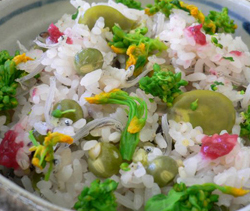

シラスと豆の炊き込みごはん
- 調理時間：60 分
- （一人当たり）
- カロリー：359kcal
- たんぱく質：13.7g
- 脂質：1.4g
- 塩分：2.3g

＜５～６人分＞
- 米
- 3カップ
- エンドウマメ・ソラマメ
- 合わせて
1カップ - シラス
- 1/4カップ
- 塩
- 小さじ1.5
- 菜の花
- 150g
- 梅肉
- 適宜

- 米を研ぎ、ザルにあげて水気を切り、炊飯器に米と分量の水を加える。
- エンドウマメとソラマメは鞘から出し、塩少々（分量外）をまぶす。
- ①に②、シラス、塩を加えて、炊飯器のスイッチをいれて炊く。
- 菜の花を塩ゆでして、３ｃｍ幅に切る。
- 炊きあがったごはんに、菜の花と梅肉を加えて混ぜ合わせる。
シラスと豆の炊き込みごはん
春は入学、引越し、転勤など新しい環境を迎え、何かとストレスを溜め込みやすく、イライラしたり、心のバランスが崩れがちな季節です。この症状に対応する栄養素はカルシウムで、この時期、積極的に摂りたいミネラルです。
カルシウムには神経の興奮を抑えるはたらきがあります。動物性食品や植物性食品の双方に含まれていますが吸収率にバラつきがあるので、いろいろな食材から摂ることがよいでしょう。今回は、カルシウムが豊富な食品として菜の花とシラスを使用しました。どちらもカルシウムだけでなく、ビタミンＢ群も含まれ、精神疲労に効果的。成長期のお子様から、骨粗鬆症を心配する高齢者まで、幅広い年代の方々におすすめしたいレシピです。